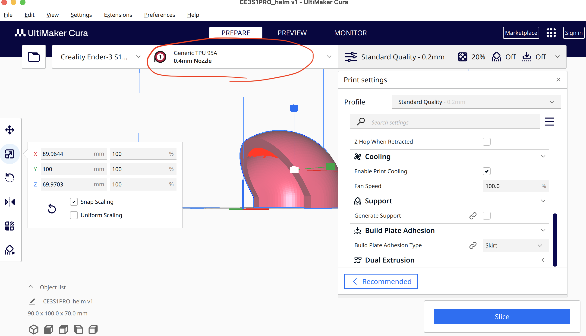

第4回 Design for Others
Powered by こばやし
どこでも安眠メット
作ったキッカケ
グループで注目した「気になった人」は、電車内で立って寝てる人
この人の役に立つものを作ろう。
私のイメージ
制作過程
コンセプトとして
電車内で寝るのなら、周りの人と揉めないようなものを装着したいはず。
柔らかい素材で、本人が電車内の手すりなどに頭をぶつけても、
他の人がヘルメットにぶつかっても痛くないものにしよう...
->何やら3Dプリンターの素材にも様々あるらしく、
たくさん用意されてて硬いPLAだけでなく、
柔らかいTPUという素材もあるらしい！
なので四角いブツを作り、テストしてみた。

画像左はPLA右はTPU
確かにTPUは中が空洞なので柔らかい。
早速作ることにした。
まずはfusion360で四角柱を回転させてメットらしいものをつくってみた。
ちなみに球の中をくり抜いて三等分する的な方法も試したが、こちらはほぼ不可能に思えた。

次にcuraで、素材をTPUにしてslice。

そして、3DプリンターにTPU素材をいろいろやってセットし、
縮小版の「どこでも安眠メット(仮)」が完成した。
感想
制作途中にTPUでクロックスを作ってそのデータを配布する人がいるという話を聞いた。
スキャンなのか手動でデータを作ったのかは定かではないが、可能性を感じた。
また、ねるメットなるものもあるらしい。